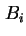
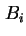
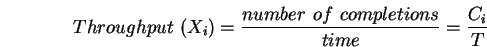
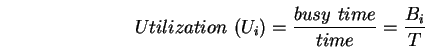
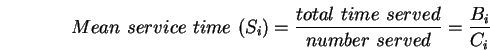

ค่าวัดจากการใช้งาน (Operational Quantities) คือค่าวัดที่สามารถวัดได้โดยตรงจากระบบในช่วงเวลาการวัดหนึ่งๆ ตัวอย่างเช่น ในรูป 7.1
เราสามารถวัดจำนวนงาน  ที่เข้าใช้ระบบในช่วงเวลาเฝ้าสังเกต
ที่เข้าใช้ระบบในช่วงเวลาเฝ้าสังเกต  , จำนวนงานที่เสร็จออกจากระบบ
, จำนวนงานที่เสร็จออกจากระบบ  , และช่วงเวลาที่ระบบรับภาระงานอยู่  ค่าการวัดขั้นต้นเป็นค่าที่สามารถ วัดได้จริงจากระบบ ซึ่งสามารถพิสูจน์สมการเพิ่มเติมได้เป็น
, และช่วงเวลาที่ระบบรับภาระงานอยู่  ค่าการวัดขั้นต้นเป็นค่าที่สามารถ วัดได้จริงจากระบบ ซึ่งสามารถพิสูจน์สมการเพิ่มเติมได้เป็น
| (7.1) |
|  | (7.2) |
|  | (7.3) |
|  | (7.4) |
| (7.5) |
| (7.6) |
จากสมการขั้นต้นจะเห็นได้ว่าค่าการวัดที่ได้ เป็นตัวแปรที่มีการเปลี่ยนแปลงไปตามการเฝ้าสังเกตหนึ่งๆ อย่างไรก็ตามความสัมพันธ์ที่นำเสนอ เป็นความสัมพันธ์ที่เป็นจริงในทุกการเฝ้าสังเกตระบบ ความสัมพันธ์ดังกล่าวเรียกว่ากฎการปฏิบัติงาน